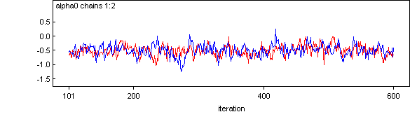
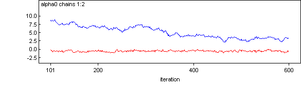

![[tutorial0]](tutorial0.bmp) Tutorial
Tutorial
Contents
Introduction
Specifying a model in the BUGS language
Running a model in WinBUGS
Monitoring parameter values
Checking convergence
How many iterations after convergence?
Obtaining summaries of the posterior distribution
Introduction [top]
This tutorial is designed to provide new users with a step-by-step guide to running an analysis in WinBUGS. It is not intended to be prescriptive, but rather to introduce you to the main tools needed to run an MCMC simulation in WinBUGS, and give some guidance on appropriate usage of the software.
The Seeds example from Volume I of the WinBUGS examples will be used throughout this tutorial. This example is taken from Table 3 of Crowder (1978) and concerns the proportion of seeds that germinated on each of 21 plates arranged according to a 2 by 2 factorial layout by seed and type of root extract. The data are shown below, where r i and n i are the number of germinated and the total number of seeds on the i th plate, i = 1, ..., N. These data are also analysed by, for example, Breslow and Clayton (1993).
seed O. aegyptiaco 75 seed O. aegyptiaco 73
Bean Cucumber Bean Cucumber
r n r/n r n r/n r n r/n r n r/n
_____________________________________________________________________
10 39 0.26 5 6 0.83 8 16 0.50 3 12 0.25
23 62 0.37 53 74 0.72 10 30 0.33 22 41 0.54
23 81 0.28 55 72 0.76 8 28 0.29 15 30 0.50
26 51 0.51 32 51 0.63 23 45 0.51 32 51 0.63
17 39 0.44 46 79 0.58 0 4 0.00 3 7 0.43
10 13 0.77
The model is essentially a random effects logistic regression, allowing for over-dispersion. If p i is the probability of germination on the i th plate, we assume
r i ~ Binomial(p i , n i )
logit(p i ) = a 0 + a 1 x 1i + a 2 x 2i + a 12 x 1i x 2i + b i
b i ~ Normal(0, t)
where x 1i and x 2i are the seed type and root extract of the i th plate, and an interaction term a 12 x 1i x 2i is included.
Specifying a model in the BUGS language [top]
The BUGS language allows a concise expression of the model, using the 'twiddles' symbol ~ to denote stochastic (probabilistic) relationships, and the left arrow ('<' sign followed by '-' sign) to denote deterministic (logical) relationships. The stochastic parameters a 0 , a 1 , a 2 , a 12 , and t are given proper but minimally informative prior distributions, while the logical expression for sigma allows the standard deviation (of the random effects distribution) to be estimated.
model
{
for (i in 1:N) {
r[i] ~ dbin(p[i], n[i])
b[i] ~ dnorm(0, tau)
logit(p[i]) <- alpha0 + alpha1 * x1[i] + alpha2 * x2[i]
+ alpha12 * x1[i] * x2[i] + b[i]
}
alpha0 ~ dnorm(0, 1.0E-6)
alpha1 ~ dnorm(0, 1.0E-6)
alpha2 ~ dnorm(0, 1.0E-6)
alpha12 ~ dnorm(0, 1.0E-6)
tau ~ dgamma(0.001, 0.001)
sigma <- 1 / sqrt(tau)
}
More detailed descriptions of the BUGS language along with lists of the available logical functions and stochastic distributions can be found in Model Specification and Distributions . See also the on-line examples: Volume 1 Volume 2 and Volume 3 . An alternative way of specifying a model in WinBUGS is to use the graphical interface known as DoodleBUGS .
Running a model in WinBUGS [top]
The WinBUGS software uses compound documents , which comprise various different types of information (formatted text, tables, formulae, plots, graphs, etc.) displayed in a single window and stored in a single file. This means that it is possible to run the model for the "seeds" example directly from this tutorial document, since the model code can be made 'live' just by highlighting it. However, it is more usual when creating your own models to have the model code and data etc. in separate files. We have therefore created a separate file with the model code in it for this tutorial - you will find the file in Docu/seeds_model (or click here ).
Step 1
Open the seeds_model file as follows:
* Point to F ile on the tool bar and click once with the left mouse button (LMB).
* Highlight the O pen... option and click once with LMB.
* Select the appropriate directory and double-click on the file to open.
Step 2
To run the model, we first need to check that the model description does fully define a probability model:
* Point to M odel on the tool bar and click once with LMB.
* Highlight the S pecification... option and click once with LMB.
* Focus the window containing the model code by clicking the LMB once anywhere in the window - the top panel of the window should then become highlighted in blue (usually) to indicate that the window is currently in focus.
* Highlight the word model at the beginning of the code by dragging the mouse over the word whilst holding down the LMB.
* Check the model syntax by clicking once with LMB on the check model button in the Specification Tool window. A message saying "model is syntactically correct" should appear in the bottom left of the WinBUGS program window.
Step 3
We next need to load in the data. The data can be represented using S-Plus object notation (file Docu/seeds_S_data ), or as a combination of an S-Plus object and a rectangular array with labels at the head of each column (file Docu/seeds_mix_data ).
* Open one o f the data files now.
* To load the data in file Manuals/seeds_S_data :
- Highlight the word list at the beginning of the data file.
- Click once with the LMB on the load data button in the Specification Tool window. A message saying "data loaded" should appear in the bottom left of the WinBUGS program window.
* To load the data in file Manualsl/seeds_mix_data :
- Highlight the word list at the beginning of the data file.
- Click once with the LMB on the load data button in the Specification Tool window. A message saying "data loaded" should appear in the bottom left of the WinBUGS program window.
- Next highlight the whole of the header line (i.e. column labels) of the rectangular array data. - Click once with the LMB on the load data button in the Specification Tool window. A message saying "data loaded" should appear in the bottom left of the WinBUGS program window.
Step 4
Now we need to select the number of chains (i.e. sets of samples to simulate). The default is 1, but we will use 2 chains for this tutorial, since running multiple chains is one way to check the convergence of your MCMC simulations.
* Type the number 2 in the white box labelled num of chains in the Specification Tool window. In practice, if you have a fairly complex model, you may wish to do a pilot run using a single chain to check that the model compiles and runs and obtain an estimate of the time taken per iteration. Once you are happy with the model, re-run it using multiple chains (say 2-5 chains) to obtain a final set of posterior estimates.
Step 5
Next compile the model by clicking once with the LMB on the compile button in the Specification Tool window. A message saying "model compiled" should appear in the bottom left of the WinBUGS program window. This sets up the internal data structures and chooses the specific MCMC updating algorithms to be used by WinBUGS for your particular model.
Step 6
Finally the MCMC sampler must be given some initial values for each stochastic node. These can be arbitrary values, although in practice, convergence can be poor if wildly inappropriate values are chosen. You will need a different set of initial values for each chain, i.e. two sets are needed for this tutorial since we have specified two chains - these are stored in file Manuals/seeds_inits.
* Open this file now.
* To load the initial values:
- Highlight the word list at the beginning of the first set of initial values.
- Click once with the LMB on the load inits button in the Specification Tool window. A message saying "initial values loaded: model contains uninitialized nodes (try running gen inits or loading more files)" should appear in the bottom left of the WinBUGS program window. - Repeat this process for the second initial values file. A message saying "initial values loaded: model initialized" should now appear in the bottom left of the WinBUGS program window.
Note that you do not need to provide a list of initial values for every parameter in your model. You can get WinBUGS to generate initial values for any stochastic parameter not already initialized by clicking with the LMB on the gen inits button in the Specification Tool window. WinBUGS generates initial values by forward sampling from the prior distribution for each parameter. Therefore, you are advised to provide your own initial values for parameters with vague prior distributions to avoid wildly inappropriate values.
Step 7
Close the Specification Tool window. You are now ready to start running the simulation. However, before doing so, you will probably want to set some monitors to store the sampled values for selected parameters. For the seeds example, set monitors for the parameters alpha0 , alpha1 , alpha2 , alpha12 and sigma - see here for details on how to do this.
To run the simulation:
* Select the U pdate... option from the M odel menu.
* Type the number of updates (iterations of the simulation) you require in the appropriate white box (labelled updates ) - the default value is 1000.
* Click once on the update button: the program will now start simulating values for each parameter in the model. This may take a few seconds - the box marked iteration will tell you how many updates have currently been completed. The number of times this value is revised depends on the value you have set for the refresh option in the white box above the iteration box. The default is every 100 iterations, but you can ask the program to report more frequently by changing refresh to, say, 10 or 1. A sensible choice will depend on how quickly the program runs. For the seeds example, experiment with changing the refresh option from 100 to 10 and then 1.
* When the updates are finished, the message "updates took *** s" will appear in the bottom left of the WinBUGS program window (where *** is the number of seconds taken to complete the simulation).
* If you previously set monitors for any parameters you can now check convergence and view graphical and numerical summaries of the samples. Do this now for the parameters you monitored in the seeds example - see Checking convergence for tips on how to do this (for the seeds example, you should find that at least 2000 iterations are required for convergence).
* Once you're happy tha t your simulation has converged, you will need to run some further updates to obtain a sample from the posterior distribution. The section How many iterations after convergence? provides tips on deciding how many more updates you should run. For the seeds example, try running a further 10000 updates.
* Once you have run enough updates to obtain an appropriate sample from the posterior distribution, you may summarise these samples numerically and graphically (see section Obtaining summaries of the posterior distribution for details on how to do this). For the seeds example, summary statistics for the monitored parameters are shown below:
node mean sd MC error 2.5% median 97.5% start sample
alpha0 -0.5553 0.1904 0.003374 -0.9365 -0.5563 -0.1763 2001 20000
alpha1 0.08693 0.3123 0.006873 -0.5502 0.09157 0.6964 2001 20000
alpha12 -0.8358 0.4388 0.01105 -1.731 -0.8253 -0.002591 2001 20000
alpha2 1.359 0.2744 0.005812 0.8204 1.354 1.923 2001 20000
sigma 0.2855 0.146 0.005461 0.04489 0.2752 0.6132 2001 20000
* To save any files created during your WinBUGS run, focus the window containing the information you want to save, and select the Save A s... option from the F ile menu.
* To quit WinBUGS, select the E x it option from the F ile menu.
Monitoring parameter values [top]
In order to check convergence and obtain posterior summaries of the model parameters, you first need to set monitors for each parameter of interest. This tells WinBUGS to store the values sampled for those parameters; otherwise, WinBUGS automatically discards the simulated values.
There are two types of monitor in WinBUGS:
Samples monitors: Setting a samples monitor tells WinBUGS to store every value it simulates for that parameter. You will need to set a samples monitor if you want to view trace plots of the samples to check convergence (see Checking convergence ) or if you want to obtain 'exact' posterior quantiles, for example, the posterior 95% Bayesian credible interval for that parameter. (Note that you can also obtain approximate 2.5%, 50% and 97.5% quantiles of the posterior distribution for each parameter using summary monitors . )
To set a samples monitor:
* Select S amples... from the I n ference menu;
* Type the name of the parameter to be monitored in the white box marked node ;
* Click once with the LMB on the button marked set ;
* Repeat for each parameter to be monitored.
Summary monitors: Setting a summary monitor tells WinBUGS to store the running mean and standard deviation for the parameter, plus approximate running quantiles (2.5%, 50% and 97.5%). The values saved contain less information than saving each individual sample in the simulation, but require much less storage. This is an important consideration when running long simulations (e.g. 1000's of iterations) and storing values for many variables.
We recommend setting summary monitors on long vectors of parameters such as random effects in order to store posterior summaries, and then also setting full samples monitors on a small subset of the random effects, plus other relevant parameters (e.g. means and variances), to check convergence.
To set a summary monitor:
* Select S u mmary... from the I n ference menu;
* Type the name of the parameter to be monitored in the white box marked node ;
* Click once with the LMB on the button marked set ;
* Repeat for each parameter to be monitored.
Note: you should not set a summary monitor until you are happy that convergence has been reached (see Checking convergence ), since it is not possible to discard any of the pre-convergence ('burn-in') values from the summary once it is set, ot her than to clear the monitor and re-set it.
Checking convergence [top]
Checking convergence requires considerable care. It is very difficult to say conclusively that a chain (simulation) has converged, only to diagnose when it definitely hasn't!
The following are practical guidelines for assessing convergence:
* For models with many parameters, it is impractical to check convergence for every parameter, so just choose a random selection of relevant parameters to monitor. For example, rather than checking convergence for every element of a vector of random effects, just choose a random subset (say, the first 5 or 10).
* Examine trace plots of the sample values versus iteration to look for evidence of when the simulation appears to have stabilised:
To obtain 'live' trace plots for a parameter:
- Select S amples... from the I n ference menu.
- Type the name of the parameter in the white box marked node .
- Click once with the LMB on the button marked trace : an empty graphics window will appear on screen.
- Repeat for each parameter of interest.
- Once you start running the simulations (using the U pdate... tool from the M odel menu), trace plots for these parameters will appear 'live' in the graphics windows.
To obtain a trace plot showing the full history of the samples for any parameter for which you have previously set a samples monitor and carried out some updates :
- Select S amples... from the I n ference menu.
- Type the name of the parameter in the white box marked node (or select the name from the pull down list of currently monitored nodes - click once with the LMB on the downward-facing arrowhead to the immediate right of the node field).
- Click once with the LMB on the button marked history : a graphics window showing the sample trace will appear.
- Repeat for each parameter of interest.
The following plots are examples of: (i) chains for which convergence (in the pragmatic sense) looks reasonable (left-hand-side); and (ii) chains which have clearly not reached convergence (right-hand-side).
If you are running more than one chain simultaneously, the trace and history plots will show each chain in a different colour. In this case, we can be reasonably confident that convergence has been achieved if all the chains appear to be overlapping one another.
The following plots are examples of: (i) multiple chains for which convergence looks reasonable (top); and (ii) multiple chains which have clearly not reached convergence (bottom).


For a more formal approach to convergence diagnosis the software also provides an implementation (see here ) of the techniques described in Brooks & Gelman (1998) , and a facility for outputting monitored samples in a format that is compatible with the CODA software - see here .
How many iterations after convergence? [top]
Once you are happy that convergence has been achieved, you will need to run the simulation for a further number of iterations to obtain samples that can be used for posterior inference. The more samples you save, the more accurate will be your posterior estimates.
One way to assess the accuracy of the posterior estimates is by calculating the Monte Carlo error for each parameter. This is an estimate of the difference between the mean of the sampled values (which we are using as our estimate of the posterior mean for each parameter) and the true posterior mean.
As a rule of thumb, the simulation should be run until the Monte Carlo error for each parameter of interest is less than about 5% of the sample standard deviation. The Monte Carlo error (MC error) and sample standard deviation (SD) are reported in the summary statistics table (see section Obtaining summaries of the posterior distribution ).
Obtaining summaries of the posterior distribution [top]
The posterior samples may be summarised either graphically, e.g. by kernel density plots, or numerically, by calculating summary statistics such as the mean, variance and quantiles of the sample.
To obtain summaries of the monitored samples, to be used for posterior inference:
* Select S amples... from the I n ference menu.
* Type the name of the parameter in the white box marked node (or select the name from the pull down list, or ty pe "*" (star) to select all monitored parameters). * Type the iteration number that you want to start your summary from in the white box marked beg : this allows the pre-convergence 'burn-in' samples to be discarded.
* Click once with the LMB on the button marked stats : a table reporting various summary statistics based on the sampled values of the selected parameter will appear.
* Click once with the LMB on the button marked density : a window showing kernel density plots based on the sampled values of the selected parameter will appear.
Please see the manual entry Samples... for a detailed description of the Sample Monitor Tool dialog box (i.e. that which appears when S amples... is selected from the I n ference menu).